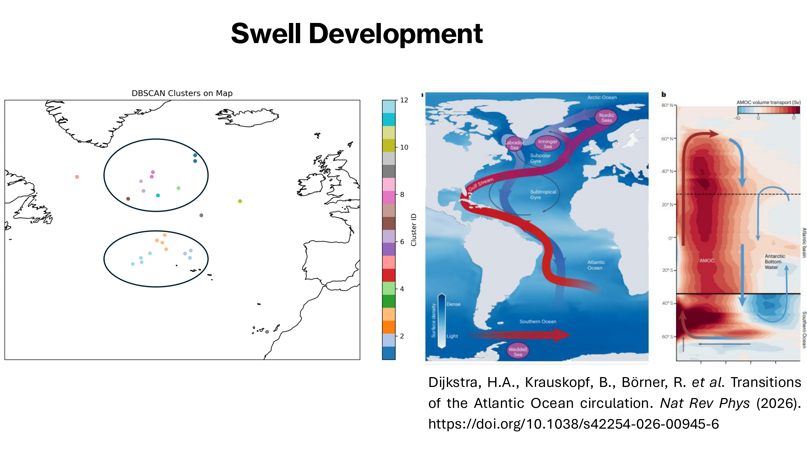
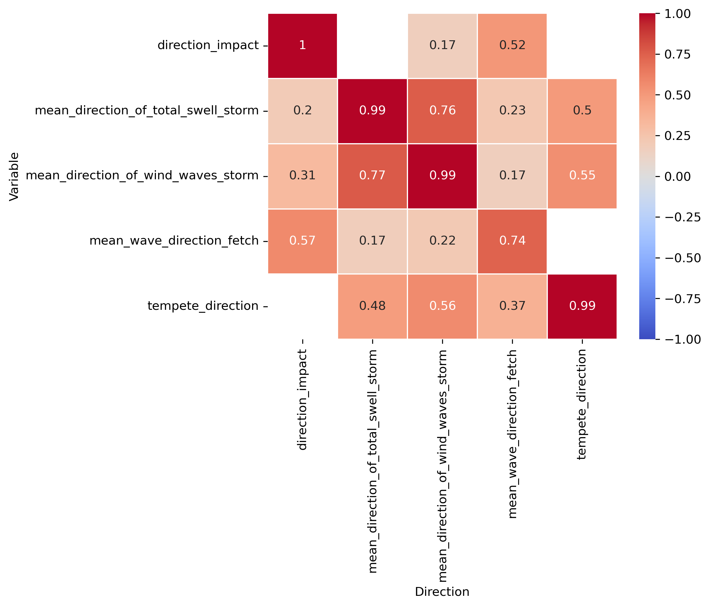

PROJECT OVERVIEW
From storm dynamics to coastal impact
Coastal impacts in the Canary Islands cannot be understood from storm intensity alone. The direction in which a storm develops, the geometry of the associated wind field, the resulting fetch and the propagation of swell all influence how wave energy reaches the archipelago.
This project reconstructs this pathway by combining atmospheric reanalysis, storm tracks, fetch characteristics, directional wave information and coastal impact observations.
RESEARCH QUESTIONS
How does a storm become a coastal impact?
Where do the North Atlantic storms affecting the Canary Islands develop, and which spatial patterns characterize their atmospheric conditions?
How are storm direction and atmospheric dynamics related to the orientation of the associated fetch and swell?
How closely are storm, fetch, swell and impact directions aligned throughout the system?
Which environmental variables are associated with larger or smaller directional differences between these stages?
DATA
Connecting atmospheric and coastal observations
The analysis combines atmospheric reanalysis, storm-track information, fetch geometry, directional wave characteristics and observed coastal impacts.
The resulting dataset contains approximately 231 storm-impact observations, allowing both spatial and statistical analysis of the storm–swell pathway.
STORM SPATIAL PATTERNS
Identifying recurring North Atlantic storm environments
Spatial analysis reveals recurring areas of atmospheric activity across the North Atlantic. Local spatial statistics were used to identify clusters of similar storm characteristics.
High–high clusters were repeatedly identified around the Azores and along parts of the American coast, while additional patterns emerged around Greenland and the wider North Atlantic.
Examples of meteorological variables used in the study.
The spatial patterns suggest two broad groups of storm environments: systems associated with the Azores region and systems travelling along the western Atlantic margin.
These patterns are exploratory rather than a formal storm classification, but they provide a useful geographical framework for interpreting the directional analysis.
STORM → FETCH → SWELL → IMPACT
Following the directional pathway

Conceptual framework linking storm development, fetch geometry, swell propagation and coastal response.
01 — Storm
Storm trajectories and atmospheric variables
were used to characterize the systems affecting
the Canary Islands.
02 — Fetch
Wind conditions and storm geometry were used
to characterize the orientation and extent
of the wave-generation area.
03 — Swell
Swell direction and wave characteristics were
analysed to investigate how wave systems
propagate away from their generation area.
04 — Impact
Observed coastal impacts were then compared
with storm, fetch and swell directions to
identify where directional differences emerge.
DIRECTIONAL RELATIONSHIPS
Storm, fetch, swell and impact directions are connected — but not identical
Correlation analysis shows that the strongest relationships are generally found between the directional variables themselves rather than between direction and individual meteorological variables.
The geographical components of storm, swell and impact directions show weak-to-moderate spatial relationships, while differences between successive stages provide a more informative description of how the system evolves.

Directional differences between storm, fetch, swell and impact stages.
One of the strongest relationships is observed between the storm–impact directional difference and the fetch–impact difference (r ≈ 0.41).
A second relationship links the storm–impact difference with the fetch–storm difference (r ≈ 0.35), suggesting that directional changes introduced earlier in the storm–fetch pathway are reflected further downstream.
ATMOSPHERIC CONTROLS
Which environmental variables are associated with directional changes?
Correlations between directional components and meteorological variables are generally weak to moderate. Precipitation, latent heat flux, wind speed and air-density-related variables show some relationships with storm or swell direction, but no single variable explains the full directional response.
Where Pearson and non-parametric correlations both identify a relationship, their estimates are generally consistent. Relationships detected by only one method tend to be weak, typically with coefficients close to zero.
For example, storm-direction components show associations with precipitation and wind-related variables, while swell-direction components show weaker relationships with latent heat flux, precipitation, wind speed and vertical velocity.
These results suggest that atmospheric conditions influence directional organisation, but that the resulting coastal response depends on the combined storm–fetch–swell configuration.
MULTIVARIATE MODELLING
From exploratory regression to directional modelling
Multiple linear regression was first used as an exploratory diagnostic to quantify how much of the directional variability could be associated with atmospheric and storm characteristics.
Initial models revealed substantial differences between directional responses. For example, weather variables explained approximately 14% of the variability in the fetch–impact directional difference, compared with approximately 41% for the impact–wind directional difference.
Fetch → impact
R² ≈ 0.14
Vorticity, storm distance and storm speed were
significantly associated with the directional
difference.
Storm → impact
R² ≈ 0.25
SST, vertical velocity, vorticity, distance
and storm speed contributed to the model.
Wind → impact
R² ≈ 0.41
This model showed stronger explanatory power,
with latent heat flux, SST, vertical velocity,
vorticity, distance and speed contributing
significantly.
Storm → swell
A reduced model explained approximately 26%
of the storm–swell directional difference after
removing highly collinear atmospheric predictors.
The initial predictor set contained severe multicollinearity, with very high VIF values for sea-level pressure, SST and air density. Correlation diagnostics were therefore used to remove redundant variables.
The final six-predictor model reduced VIF values to approximately 1.2–2.4 for latent heat flux, storm speed, vorticity, SST, vertical velocity and distance.
DIRECTIONAL MODELLING
Why conventional regression is not enough
Storm, fetch, swell and impact directions are circular variables: 0° and 360° represent the same direction. Treating them as conventional linear variables introduces an artificial discontinuity.
The linear regressions were therefore treated as an exploratory diagnostic rather than as the final inferential framework. The analysis is being extended using angular regression to model directional responses directly.

Directional modelling framework used to account for the circular nature of storm, swell and impact directions.
KEY FINDINGS
What the analysis reveals
01 — Storm environments are spatially structured
Spatial clustering reveals recurring areas of
storm activity around the Azores, the western
Atlantic and parts of the North Atlantic.
02 — Direction is progressively transformed
Storm, fetch, swell and impact directions are
related, but directional differences emerge
throughout the pathway from storm development
to coastal response.
03 — Atmospheric variables explain only part
of directional variability
Regression models identify meaningful associations
with storm speed, vorticity, distance, SST,
vertical velocity and heat-flux variables, but
no single predictor explains the complete system.
04 — The storm–fetch–swell pathway matters
The strongest relationships are often found
between directional differences themselves,
highlighting the importance of the propagation
pathway rather than storm intensity alone.
05 — Direction requires circular methods
Because directional variables are inherently
circular, angular modelling provides a more
appropriate framework for the next stage of
the analysis.
06 — Coastal impacts emerge from interacting
processes
The results support a process-based interpretation
in which atmospheric dynamics, fetch geometry,
swell propagation and coastal orientation jointly
shape observed impacts.
METHODS & TOOLS